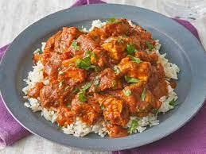

Chicken Tikka Masala

Chicken Tikka Masala
This takeaway favourite is freezer-friendly and quick to reheat, giving you the chance to get ahead and save money.
Ingredients
- 4 tbs vegetable oil
- 125g butter
- 4 oninons roughly chopped
- 6 tbsp chicken tikka masala paste
- 2 red pepperss
- 18 chicken breasts
- 2 x 400g cans chopped tomatoes
- 4 tbsp tomato puree
- 2-3 tbs mango chutney
- 150 ml double cream
- J150 ml natural yogurt
- Chopped coriander leaves, to serve
Steps
- Heat the vegetable oil and butter in a large, lidded casserole on the hob, then add the onions and a pinch of salt. Cook for 15-20 mins until soft and golden.
- Add the tikka masala paste and peppers, then cook for 5 mins more to cook out the rawness of the spices.
- Add the chicken breasts and stir well to coat in the paste. Cook for 2 mins, then tip in the chopped tomatoes, tomato purée and 200ml water. Cover with a lid and gently simmer for 15 mins, stirring occasionally, until the chicken is cooked through.
- Remove the lid, stir through the mango chutney, double cream and natural yogurt, then gently warm through. Season, then set aside whatever you want to freeze. Will keep, in an airtight container, in the freezer for up to three months. Scatter the rest with coriander leaves and serve with basmati rice and naan bread.
- Add toppings and drizzle with olive oil